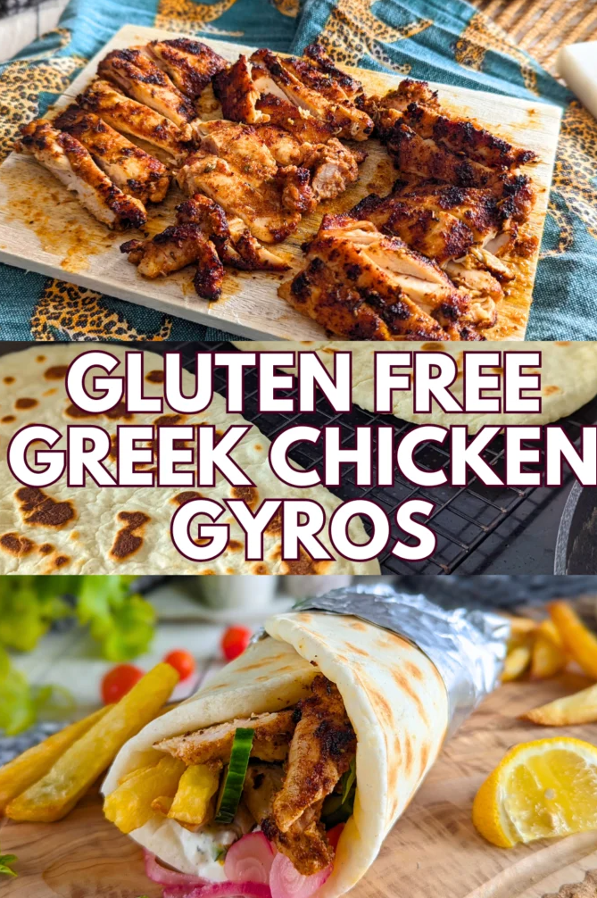

📲 Mealboard import: In Mealboard, use Add Recipe → From Website and paste this page's URL. Yield = 4 large flatbreads. Uses whole ingredients only and is well suited to a warm gyro or kebab wrap.

Soft & Pliable Gluten-Free Gyro Pita
A rustic, gluten-free flatbread designed to mimic the soft, foldable chew of a classic gyro pita without relying on wheat gluten. Psyllium husk gives the dough its elasticity, sorghum or millet flour brings the warm grain flavor, and almond flour adds tenderness and richness. Pan-fried in a hot cast-iron skillet and then wrapped in a damp towel, the finished breads steam-soften into supple, rollable wraps that hold gyro meat, cucumber, tomato, onion, and tzatziki beautifully.
Celiac / GF
DP / Blood Sugar
Kidney Stone
Low to moderate GI — psyllium and whole-grain flour help soften the response
📊 Targeted nutrients — per serving (1 pita, 1 of 4) estimates · sorghum/millet + almond flour + psyllium
Net carbs: ~8–10 g per pita
Saturated fat: ~1–2 g per pita
This bread is intentionally focused on structure and softness rather than a dry cracker texture. The psyllium slows starch movement, while the whole-grain flour keeps the taste more like a rustic flatbread than a sweet cassava wrap.
Fiber — satiety
~2–3 g
18% of daily target
Protein — blood sugar stability
~3–4 g
12% of daily target
Potassium — electrolyte support
~60–90 mg
4% of daily target
🧾 Ingredients — 4 large pitas
- 10gWhole psyllium husk🟢 GF
- 200gLukewarm water⬜ zero
- 135gWhole-grain sorghum or millet flour🟢 grain
- 45gAlmond flour🟢 tender
- 1 tspBaking powder⬜ lift
- 1/2 tspFine sea salt⬜ zero
- 1 tbspExtra virgin olive oil⬜ softens dough
- ExtraOlive oil for dry-frying or lightly wiping the pan⬜ optional
👩🍳 Method
-
1
Create the psyllium gelWhisk the psyllium husk and lukewarm water together in a medium bowl. Let it sit for 45–60 seconds until it becomes thick, bouncy, and gel-like. Whisk in the olive oil until the mixture is smooth and glossy.
-
2
Mix the dry ingredientsIn a second bowl, whisk together the sorghum or millet flour, almond flour, baking powder, and salt until evenly distributed.
-
3
Knead the doughAdd the wet psyllium gel to the dry ingredients and stir until a shaggy dough appears. Then knead in the bowl with your hands for 1–2 minutes until the dough becomes smooth and pliable, like Play-Doh. If it is sticky, dust in a tiny pinch of flour; if it seems dry, add a few drops of water.
-
4
Rest the doughDivide the dough into 4 equal portions and shape them into tight balls. Cover loosely with a towel and rest on the counter for 15 minutes. This hydration pause is what makes the cooked flatbreads noticeably softer.
-
5
Roll it outPut one dough ball between two sheets of parchment paper or on a lightly dusted surface. Roll from the center outward to a round disc about 7–8 inches wide and 1/4 inch thick. Do not roll paper-thin; the slight thickness is what keeps the bread fluffy instead of crunchy.
-
6
Pan-fryHeat a heavy cast-iron skillet or griddle over medium-high heat until very hot. Carefully peel the flatbread away from the parchment and place it directly in the dry pan. No extra pool of oil is needed.
-
7
Flip and finishCook for about 2 minutes on the first side until little bubbles appear and the bottom develops golden-brown spots. Flip and cook another 1–2 minutes on the second side.
-
8
Steam-softenAs soon as each flatbread comes off the skillet, move it onto a plate and wrap it tightly in a clean, slightly damp towel. The trapped steam softens the crust and makes the pita supple, tender, and easy to wrap around warm gyro meat and vegetables.
Why this works: Psyllium husk is the key structural ingredient; it swells into a gel and gives the dough the elasticity that gluten would normally provide. Sorghum and millet contribute a soft whole-grain flavor and a more neutral, rustic profile than cassava, while almond flour adds tenderness and a little richness without making the flatbread greasy. Cooking on a dry, very hot skillet creates the proper browned spots and then the towel-steaming step keeps the pita from turning tough as it cools. This is a better “wrap” bread than an all-cassava version for a gyro because it rests more gently on the palate and folds without the brittle edge behavior.
🔬 Conditions — what to know
- Celiac / GF: This recipe is naturally gluten-free when you use certified gluten-free grain flour and psyllium. Double-check all labels if you are highly sensitive.
- Blood sugar / Dawn Phenomenon: The grain flour is still a starch, but the psyllium and almond flour keep the flatbread far gentler than most standard GF wraps. Pairing it with lean protein, cucumbers, and a yogurt-based sauce helps keep the overall response smoother.
- Kidney stone: This is well within kidney-stone-friendly boundaries. Low oxalate ingredients, no added sugar, and no high-oxalate flour blend.
- Best use: Great with grilled beef or chicken gyros, lamb, falafel, roasted vegetables, and a generous layer of tzatziki or yogurt sauce. Serve warm and folded while still soft.
- Make-ahead: The cooked flatbreads stack and freeze well if cooled completely and separated with parchment. Rewarm briefly in a skillet or toaster oven and re-wrap in a towel to restore softness.